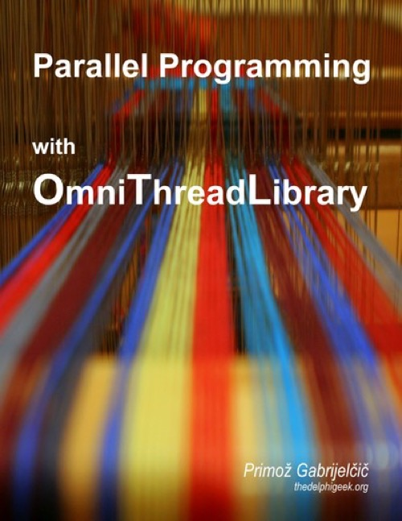

Parallel programming with OmniThreadLibrary
Published by : Leanpub
Writed by : Primož Gabrijelčič
Published date : 06/02/2018
Language :  English
English
Web site : https://www.thedelphigeek.com/2018/02/parallel-programming-with.html
About Parallel programming with OmniThreadLibrary
Parallel programming is hard. Your best bet to a stable application is a good multithreading framework and for Delphi that means OmniThreadLibrary.
This book - which is, incidentally, written by the very author of the OmniThreadLibrary - walks you through different parts of the library. It gives an overview of low-level multithreading approach (programming with tasks), high-level approach (programming with abstractions) and describes various helper functions and data structures implemented in the library.
The book also walks you through multiple examples which demonstrate different aspects of multithreaded programming - from parallel execution of http requests to creation of database connection pools and multithreaded user interfaces.
Where to buy ?
If this book is still available for sale, you probably can order it on its website.
Table of content
About me
Credits
Introduction
Formatting conventions
Learn more
Release notes
1. Introduction to multi-threading
1.1 Multi-threading as a source of problems
1.1.1 Reading and writing shared data
1.1.2 Modifying shared data
1.1.3 Writes masquerading as reads
2. Introduction to OmniThreadLibrary
2.1 Requirements
2.2 License
2.3 Installation
2.3.1 Installing with GetIt
2.3.2 Installing with Delphinus
2.3.3 Installing design package
2.4 Why use OmniThreadLibrary?
2.5 Tasks vs. threads
2.6 Locking vs. messaging
2.7 Message loop required
2.7.1 OmniThreadLibrary and console
2.7.2 OmniThreadLibrary task started from another task
2.7.3 OmniThreadLibrary task started from a TThread
2.8 TOmniValue
2.8.1 Data access
2.8.2 Type testing
2.8.3 Clearing the content
2.8.4 Operators
2.8.5 Using with generic types
2.8.6 Array access
2.8.7 Handling records
2.8.8 Object ownership
2.8.9 Working with TValue
2.8.10 Low-level methods
2.9 TOmniValueObj
2.10 Fluent interfaces
3. High-level multi-threading
3.1 Introduction
3.1.1 A life cycle of an abstraction
3.1.2 Anonymous methods, procedures, and methods
3.1.3 Pooling
3.2 Blocking collection
3.2.1 IOmniBlockingCollection
3.2.2 Bulk import and export
3.2.3 Throttling
3.3 Task configuration
3.4 Async
3.4.1 Handling exceptions
3.5 Async/Await
3.6 Future
3.6.1 IOmniFuture interface
3.6.2 Completion detection
3.6.3 Cancellation
3.6.4 Handling exceptions
3.6.5 Examples
3.7 Join
3.7.1 IOmniParallelJoin interface
3.7.2 IOmniJoinState interface
3.7.3 Cancellation
3.7.4 Handling exceptions
3.8 Parallel task
3.8.1 IOmniParallelTask interface
3.8.2 Example
3.8.3 Handling exceptions
3.8.4 Examples
3.9 Background worker
3.9.1 Basics
3.9.2 IOmniBackgroundWorker interface
3.9.3 Task initialization
3.9.4 Work item configuration
3.9.5 Work item interface
3.9.6 Examples
3.10 Pipeline
3.10.1 Background
3.10.2 Basics
3.10.3 IOmniPipeline interface
3.10.3.1 Example
3.10.4 Generators, mutators, and aggregators
3.10.5 Throttling
3.10.6 Parallel stages
3.10.7 Exceptions
3.10.8 Examples
3.11 Parallel for
3.11.1 IOmniParallelSimpleLoop interface
3.11.2 Iterating over an array
3.11.3 Examples
3.12 ForEach
3.12.1 Cooperation
3.12.2 Iterating over …
3.12.2.1 … Number ranges
3.12.2.2 … Enumerable collections
3.12.2.3 … Thread-safe enumerable collections
3.12.2.4 … Blocking collections
3.12.2.5 … Anything
3.12.3 Providing external input
3.12.4 IOmniParallelLoop interface
3.12.5 Preserving output order
3.12.6 Aggregation
3.12.7 Cancellation
3.12.8 Task initialization and finalization
3.12.9 Handling exceptions
3.12.10 Examples
3.13 Fork/Join
3.13.1 IOmniForkJoin interface
3.13.2 IOmniCompute interface
3.13.3 IOmniCompute interface
3.13.4 Exceptions
3.13.5 Examples
3.14 Map
3.14.1 IOmniParallelMapper interface
3.15 Timed task
3.15.1 IOmniTimedTask interface
4. Low-level multi-threading
4.1 Low-level for the impatient
4.2 Four ways to create a task
4.3 IOmniTaskControl and IOmniTask interfaces
4.4 Task controller needs an owner
4.5 Communication subsystem
4.6 Processor groups and NUMA nodes
4.7 Thread pooling
4.7.1 Execution flow
4.7.2 IOmniThreadPool interface
4.7.3 Task exit code
4.7.4 Monitoring thread pool operations
4.7.5 Processor groups and NUMA nodes
4.8 Lock-free collections
4.8.1 Bounded Stack
4.8.2 Bounded queue
4.8.3 Message queue
4.8.4 Dynamic queue
4.8.5 Observing lock-free collections
4.8.5.1 Examples
4.8.6 Benchmarks
4.9 Event monitor
4.10 Simple tasks
4.10.1 Name
4.10.2 UniqueID
4.10.3 Parameters
4.10.4 Termination
4.10.5 ExitCode
4.10.6 Exceptions
4.10.7 Sending messages to a task
4.10.8 Receiving messages from a task
4.10.9 ChainTo
4.10.10 Join / Leave
4.10.11 MonitorWith / RemoveMonitor
4.10.12 Enforced
4.10.13 Unobserved
4.10.14 Cancellation token / CancelWith
4.10.15 Lock / WithLock
4.10.16 WithCounter
4.10.17 SetPriority
4.10.18 SetQueueSize
4.11 TOmniWorker tasks
4.11.1 WaitForInit
4.11.2 Task
4.11.3 Receiving messages
4.11.4 RegisterComm
4.11.5 Invoke
4.11.6 Windows message & APC processing
4.11.7 Timers
4.11.8 TerminateWhen
4.11.9 UserData
4.12 Task groups
4.13 IOmniTask interface
4.13.1 Name and ID
4.13.2 Parameters
4.13.3 Termination
4.13.4 Exit status
4.13.5 Exceptions
4.13.6 Communication
4.13.7 Timers
4.13.8 RegisterWaitObject
4.13.9 CancellationToken
4.13.10 Lock
4.13.11 Counter
4.13.12 Processor groups and NUMA nodes
4.13.13 Internal and obsolete functions
5. Synchronization
5.1 Critical sections
5.1.1 IOmniCriticalSection
5.1.2 TOmniCS
5.1.3 Locked
5.1.3.1 Why not use TMonitor?
5.2 TOmniMREW
5.3 Cancellation token
5.4 Waitable value
5.5 Inverse semaphore
5.6 Initialization
5.6.1 Pessimistic initialization
5.6.2 Optimistic initialization
5.7 TWaitFor
5.8 TOmniLockManager
5.9 TOmniSingleThreadUseChecker
6. Miscellaneous
6.1 TOmniTwoWayChannel
6.2 TOmniValueContainer
6.3 TOmniCounter
6.4 TOmniAlignedInt32 and TOmniAlignedInt64
6.5 TOmniRecordWrapper
6.6 TOmniRecord
6.7 IOmniAutoDestroyObject
6.8 IOmniIntegerSet
6.9 Environment
6.9.1 IOmniAffinity
7. How-to
7.1 Background file scanning
7.2 Web download and database storage
7.3 Parallel for with synchronized output
7.4 Using taskIndex and task initializer in parallel for
7.5 Background worker and list partitioning
7.6 Parallel data production
7.7 Building a connection pool
7.7.1 From theory to practice
7.7.2 Running the demo
7.8 QuickSort and parallel max
7.8.1 QuickSort
7.8.2 Parallel max
7.9 Parallel search in a tree
7.10 Multiple workers with multiple frames
7.10.1 The worker
7.10.2 The frame
7.10.3 The form
7.11 OmniThreadLibrary and databases
7.11.1 Database model
7.11.2 Frame and worker
7.11.2.1 Connecting to the database
7.11.2.2 Retrieving the data
7.11.3 Main program
7.12 OmniThreadLibrary and COM/OLE
7.13 Using a message queue with a TThread worker
7.13.1 Sending data from multiple producers to a single worker
7.13.1.1 Initialization and cleanup
7.13.1.2 Sending data to the worker
7.13.1.3 Receiving the data
7.13.2 Sending data from a worker to a form
7.13.2.1 Initialization and cleanup
7.13.2.2 Sending data to the form
7.13.2.3 Receiving the data
A. Units
B. Demo applications
C. Examples
D. Hooking into OmniThreadLibrary
Exception notifications
Thread notifications
Pool notifications
E. ForEach internals
Source provider
Data manager
Local queue
Output ordering
F. Hyperlinks
Notes